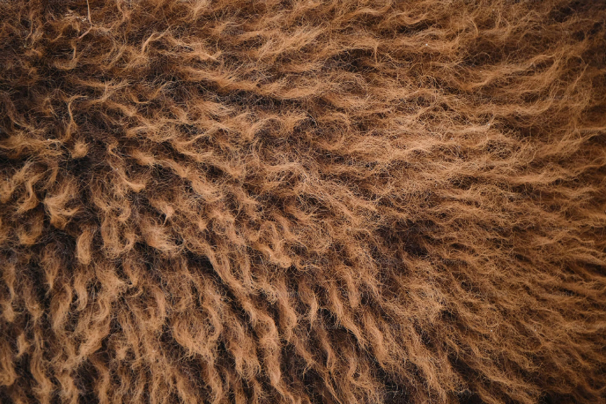
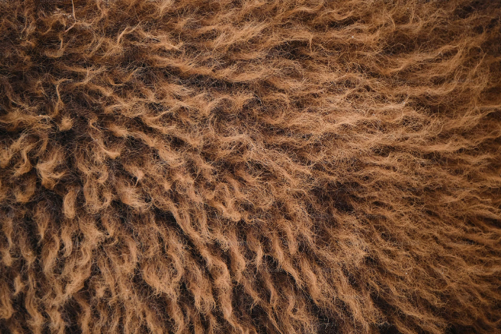

Tanjiro Kamado
Tanjiro Kamado Kamado Tanjirō? is the main
protagonist of Demon Slayer:
Kimetsu no Yaiba. He is a Demon Slayer in the Demon Slayer Corps, who joined to
find a
remedy to turn his sister, Nezuko Kamado, back into a human and to hunt down and
kill
demons,[5] and later swore to defeat Muzan Kibutsuji,[6] the King of Demons, in
order to
prevent others from suffering the same fate as him.
Tanjiro Kamado is the main
protagonist of Demon Slayer:
Kimetsu no Yaiba. He is a Demon Slayer in the Demon Slayer Corps, who joined to
find a
remedy to turn his sister.

 
